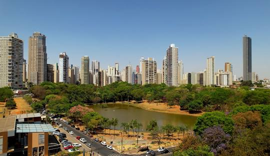

Goiânia é a cidade que mais combina comigo, talvez porque ela consiga ser grande sem perder o jeito acolhedor de interior. Sempre que penso nela, me vem à mente as ruas arborizadas, os parques cheios de vida e aquela sensação de tranquilidade que não se encontra em qualquer lugar. É uma cidade que respira natureza no meio do concreto, onde a gente pode caminhar, sentar na grama, observar as pessoas e simplesmente sentir o tempo passar mais leve. Goiânia tem um ritmo próprio, que não é apressado demais, mas também não é parado, é um equilíbrio que me faz sentir bem.
Além disso, o que mais me encanta em Goiânia é o clima humano, as pessoas, a cultura e a energia do lugar. A comida, a música, as feiras, tudo tem um toque de simplicidade que conquista. É uma cidade que tem vida, mas não sufoca, que tem movimento, mas ainda preserva a calma. Para mim, Goiânia não é só um lugar no mapa, é um lugar que traz paz, lembranças boas e uma sensação de pertencimento que é difícil de explicar, mas muito fácil de sentir.
